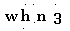
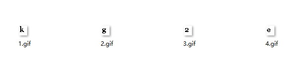
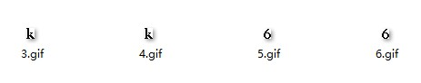
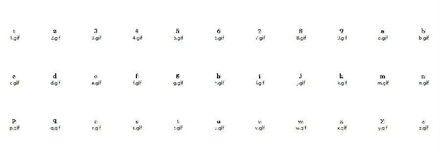
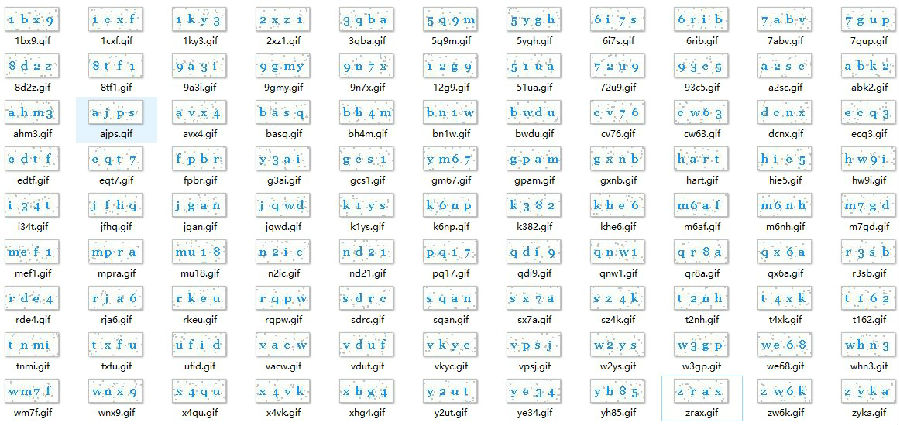

折腾的过程中遇到了很多坑，时间原因就不细说了，这里把最后的最优方法分享出来，代码会直接贴我最后写的一个类里面的部分代码。下面开始正文。
做之前先百度查了资料做些准备工作。
python图像处理用PIL库，我win10 64bit + python2.7.1 pip 和 官网 下载都无法安装，后来用pillow代替了。
识别的一般步骤是
1.去除背景噪音，二值化图像
2.分割字符，调整位置
3.制作字库样本
4.匹配样本
最后再来一个
5.验证正确率
这是一个评测的重要指标
它的验证码比较简单，也比较适合这次折腾，毕竟初体验就适合入门级的难度。验证码长下面这样。
第一步 图像预处理
预处理呢就是二值化处理，第一次识别正确率只有百分之30左右，后来的解决方案是先图像增强，突出验证码字符和背景的区别度，然后进行二值化，最后去除噪点。
这里二值化有好几种方法，这里不详细介绍了。去除噪点也分单个或多个，原理是判断噪声像素点临近的八个像素点是否相同，算法比较简单，网上也有参考代码。
二值化后图像如下：

去除噪点后：

可以看到效果很棒。这里经过了多次调节，调节了增强效果倍数和去噪次数。
#二值化代码
img = Image.open(dir+f) # 读入图片
img = img.convert("RGBA")
img = ImageEnhance.Sharpness(img).enhance(2.5)#图像增强，之前没增强，效果很差
pixdata = img.load()
#二值化
for y in xrange(img.size[1]):
for x in xrange(img.size[0]):
if pixdata[x, y][0] < 90:
pixdata[x, y] = (0, 0, 0, 255)
for y in xrange(img.size[1]):
for x in xrange(img.size[0]):
if pixdata[x, y][1] < 136:
pixdata[x, y] = (0, 0, 0, 255)
for y in xrange(img.size[1]):
for x in xrange(img.size[0]):
if pixdata[x, y][2] > 0:
pixdata[x, y] = (255, 255, 255, 255)
img.save(path+f, "GIF")#该函数也可以改成RGB判断的,具体看需求如何 def getPixel(image,x,y,G,N): L = image.getpixel((x,y)) if L > G: L = True else: L = False nearDots = 0 # print image.getpixel((x + 1,y + 1)) if L == (image.getpixel((x - 1,y - 1)) > G): nearDots += 1 if L == (image.getpixel((x - 1,y)) > G): nearDots += 1 if L == (image.getpixel((x - 1,y + 1)) > G): nearDots += 1 if L == (image.getpixel((x,y - 1)) > G): nearDots += 1 if L == (image.getpixel((x,y + 1)) > G): nearDots += 1 if L == (image.getpixel((x + 1,y - 1)) > G): nearDots += 1 if L == (image.getpixel((x + 1,y)) > G): nearDots += 1 if L == (image.getpixel((x + 1,y + 1)) > G): nearDots += 1 if nearDots < N: return image.getpixel((x,y-1)) else: return None # 降噪 # 根据一个点A的RGB值，与周围的8个点的RBG值比较，设定一个值N（0 <N <8），当A的RGB值与周围8个点的RGB相等数小于N时，此点为噪点 # G: Integer 图像二值化阀值 # N: Integer 降噪率 0 <N <8 # Z: Integer 降噪次数 # 输出 # 0：降噪成功 # 1：降噪失败 def clearNoise(image,G,N,Z): draw = ImageDraw.Draw(image) for i in xrange(0,Z): for x in xrange(1,image.size[0] - 1): for y in xrange(1,image.size[1] - 1): color = getPixel(image,x,y,G,N) if color != None: draw.point((x,y),color)
第二步 分割字符
分割也有多种算法，常见的有投影法，直方图法等。这里我用的是投影法。这次比较简单，也不需要旋转。最开始是等距分割的，后来发现每个字符的宽度不同，很明显等距分割不可取，所以后来的算法是先等距分割，然后再边缘分割。效果如下。
等距切割后：

投影切割后：

我分割的时候是先下了100个验证码，然后通过脚本二值化，分割。
#等距分割，根据验证码的实际情况设置坐标
def __division(self,img):
font=[]
nume = 0
for i in range(4):
x = 4 + i*16
y = 8
temp = img.crop((x, y, x+16, y+18))
# temp.save("./temp/%d.gif" % nume)
temp = self.__division_2(temp)#投影分割
temp.save("./temp/%d.gif" % nume)
nume=nume+1
font.append(temp)
return font#投影分割 def __division_2(self,img): x_range = [] y_range = [] x_o,y_o,x_e,y_e= 0,0,0,0 # print img.size #扫描提取x的起始和终止坐标 for y in xrange(img.size[1]): for x in xrange(img.size[0]): # print img.getpixel((x,y)) if img.getpixel((x,y))==1: x_range.append(x) x_range.sort() # print x_range x_o,x_e = x_range[0],x_range[len(x_range)-1] #扫描提取y的起始和终止坐标 for x in xrange(img.size[0]): for y in xrange(img.size[1]): if img.getpixel((x,y))==1: y_range.append(y) y_range.sort() y_o,y_e = y_range[0],y_range[len(y_range)-1] # print (x_o,y_o,x_e+1,y_e+1) return img.crop((x_o,y_o,x_e+1,y_e+1))
第三步 制作字库
这一步要费点事了，把0~9和a~z人工识别出来。这里发现为了防止混淆，验证码里没有o 0 l。本来就做了一个库，后来又做了一个，识别率增高很多。（第二个字库可以先根据第一个识别，然后再修改提高人工识别效率）

第四步 匹配
匹配算法也不少，这里采用的是逐点对比，相当于求最小汉明距离。可以把字库提取成特征字符，也可以每次读取磁盘文件，不过明显前者速度更快。
#识别算法
def __recognize(self):
temp = self.__binary(self.img)
font = self.__division(temp)
fontMods = []
#添加字库
for imgfile in os.listdir("./num"):
if imgfile.endswith(".gif"):
fontMods.append((str(imgfile.split(".")[0]), Image.open("./num/"+imgfile)))
for imgfile in os.listdir("./num2"):
if imgfile.endswith(".gif"):
fontMods.append((str(imgfile.split(".")[0]), Image.open("./num2/"+imgfile)))
result=""
#比较像素点
for index in font:
target = index
points = []
for mod in fontMods:
same = 0
if mod[1].size == target.size:
for x in xrange(mod[1].size[0]):
for y in xrange(mod[1].size[1]):
if target.getpixel((x, y)) == mod[1].getpixel((x, y)):
same += 1
# print same
points.append((same,mod[0]))
points.sort()
result += points[len(points)-1][1]
return result第五步 验证
先验证了之前下载的验证码，人工判断下，正确率达到了百分之百。

后来又写了一个脚本，直接用验证码服务器去判断对错，识别了1000次，验证通过983次，正确率还是很不错的。
success = 0 for i in range(1000): try: res,vcode = test() print "%d:%s:%s"%(i,str(res),vcode) if res: success+=1 except Exception, e: print "time out" time.sleep(5) print success
第六步 总结
通过这次折腾，学到很多知识。感觉有点像写实验小结...查资料的时候也有很多收获，不过最关键的是联系到了实际，联系到现在所学的东西。线性代数，高数，概率论，通信原理，信息论，数字信号处理等所学知识都有体现。边缘检测（这里没用）需要求梯度，方向导数，噪声就是二位随机变量，服从高斯分部，匹配的时候比较像素点其实就是求码间距离，就是汉明距离等等。写匹配算法的时候查到神经网络算法，简单看了下，真是太神奇了。
通过联系实际，培养自己的学习兴趣，这样也给复习考研带来了很多动力！